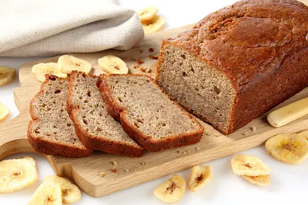

-

Brown Butter Banana Bread
Ingredients
- Butter - ½ cup
- Ripe Bananas - 3
- Brown Sugar - 1/4 cup
- White Sugar - 1/4 cup
- Egg - 1
- Vanilla - 1 tablespoon
- Flour - 1½ cups
- Baking Soda - 1½ teaspoons
- Nutmeg - ½ teaspoon
- Salt - pinch
Method of Preparation
Melt butter. Simmer for 5-10 minutes . Cool 15 minutes.
Mash 3 ripe bananas. Add brow and white sugar, egg vanilla and the belted butter. Mix well.
In another bowl, mix flour, baking soda, cinnamon, nutmeg and salt. Pour into the batter and mix well.
Grease the baking pan and pour in the batter. Bake for 45 minutes at 350°F. Serve with butter or any spread of choice.